Le World Wide Web (littéralement la « toile (d’araignée) mondiale », abrégé www
ou le Web) est inventé en 1989 par Tim Berners-Lee et Robert Cailliau.
Le Web permet de consulter, avec un navigateur, des pages accessibles sur des sites.
Le Web n’est qu’une application parmi d’autres fonctionnant sur internet, comme les emails, la visioconférence, le partage de fichiers en pair à pair, etc. Il ne faut pas confondre le Web et internet.
La naissance du Web
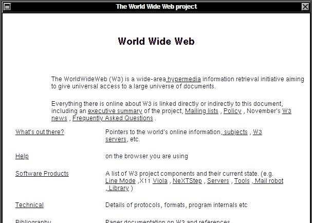
À l’origine un projet, baptisé « World Wide Web », a été conçu et développé au CERN pour que des scientifiques travaillant dans des universités et instituts du monde entier puissent s'échanger des informations instantanément.
Une application appelée WorldWideWeb est créée fin 1990. C’est à la fois le premier site web et le premier navigateur. Elle met en place tous les fondements du Web d’aujourd’hui (la création de pages web, les liens hypertextes, les recherches d’information sur le Web). C’est la naissance du Web.
Ouvrir dans un navigateur une reproduction de l’application WorldWideWeb dans son état de 1993
https://worldwideweb.cern.ch/browser/#http://info.cern.ch/hypertext/WWW/TheProject.html
et parcourir les pages pour répondre aux questions suivantes. Attention, au début du Web il fallait double-cliquer sur les liens pour les ouvrir, aujourd’hui un simple clic suffit.
Double-cliquer sur le lien History pour ouvrir la première proposition du projet Web (projet proposal). Quels sont les deux auteurs à l’origine de cette première proposition? A quelle date a-t-elle été envoyée ?
On trouve en explorant la page Technical des informations sur les protocoles utilisés dès cette l’époque par WorldWideWeb. Le premier est File Transfer Protocol (FTP). Quels sont les trois autres protocoles décrits ?
WorldWideWeb contient aussi des informations sur l’une des principales technologies du Web : le langage HTML. Quel signifie HTML d’après l’application ?
WorldWideWeb introduit aussi le concept de « tags » (ou « balises » en français) utilisés par HTML. Plusieurs de ces tags sont décrits en détails. Quels tags permettent d’afficher le titre d’une page Web ?
Quels tags permettent d’afficher une liste dans une page ?
Le tag « anchor » (ou « ancre » en français) permet de créer des liens hypertextes entre pages Web. Comment s’écrit ce tag ?
WorldWideWeb permet à chacun de contribuer au projet et de créer ses propres pages Web.
Le web a beaucoup changé en trois décennies mais un principe fondamental est resté constant : tout le monde peut publier une page web sans demander la permission à personne.
Ouvrir le menu Document > New File et créer une nouvelle page avec le nom mapage.html puis cliquer sur OK.
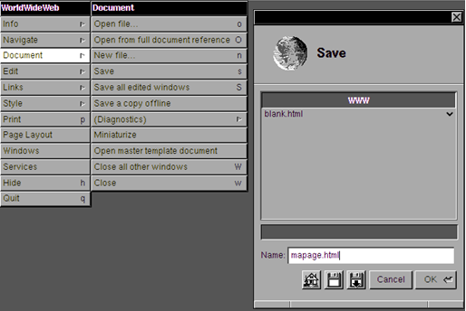
Une page vide s’ouvre.
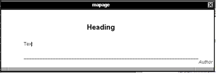
Insérer les informations suivantes sur « mapage »
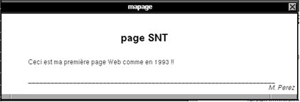
Enregistrer « mapage » avec le menu Document >Save. Ajoutons maintenant un lien hypertexte.
L’hypertexte utilise des liens sur lesquels on peut cliquer pour se rendre sur d’autres pages ou d’autres sites.
Ouvrir la nouvelle page « Welcome to the Universe of HyperText » avec le menu Navigate>Home puis créer un lien vers cette page avec le menu Links > Mark all.
Sélectionner le mot Web dans « mapage » puis cliquer sur le menu Links > Link to marked. Le lien hypertexte apparaît souligné.
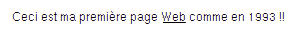
Double-cliquer sur ce lien Web pour vérifier que la page « Welcome to the Universe of HyperText » s’affiche. Vous avez créé votre premier lien!
En 1993, inspiré par la culture de collaboration et de partage scientifique, le CERN met le Web dans le domaine public, ce qui assure son succès et rapide développement. Personne ne possède le World Wide Web, autrement dit, le Web nous appartient à tous.
URL
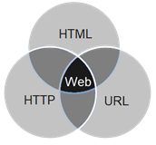
Depuis son origine, le Web repose sur les trois technologies :
- Le protocole de transfert hypertexte HTTP, pour HyperText Transfer Protocolou HTTPS dans sa version sécurisée
- Le langage HTML, pour HyperText Markup Language ; et
- Les URL, pour Uniform Resource Locator, (« localisateur de ressource uniforme » en français).
Une URL, couramment appelée adresse web, permet de localiser une ressource (un document, une image, une vidéo, etc.) sur le Web avec le protocole pour la récupérer
On peut saisir chacune de ces URL dans la barre d'adresse d’un navigateur pour qu’il affiche la ressource associée.
Voici quelques exemples d’URL :
Une URL se compose de différentes parties dont certaines sont obligatoires et d'autres optionnelles :
- Le protocole qui doit être utilisé pour récupérer le contenu. Généralement, ce protocole sera HTTP ou sa version sécurisée : HTTPS
|
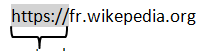
protocole
|
- Le nom de domaine du serveur web auquel le navigateur s'adresse pour échanger le contenu.
|
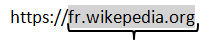
nom de domaine
|
- Le chemin, sur le serveur web, vers la ressource.
|
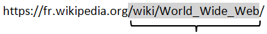
chemin
|
- Des paramètres supplémentaires fournis au serveur web, sous la forme de paires de clé/valeur séparées par « & ». Le serveur web utilise ces paramètres pour envoyer la ressource correspondante.
|
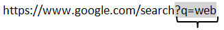
paramètres
|
Observer l’URL suivante et renseigner les différentes parties qui la composent :
https://www.lumni.fr/recherche?query=informatique+seconde&format=list
| Protocole |
|
Nom de domaine |
|
Chemin |
|
Paramètres |
|
Est-ce que cette URL est sécurisée ? Pourquoi ?
Un site à explorer
L’encyclopédie en ligne Wikipédia fait partie des sites web les plus consultés. Dans l’esprit qui animait les créateurs du Web des années 90, son fonctionnement est entièrement collaboratif.
Consulter la page principale d’accueil de la version française du site https://fr.wikipedia.org.
Combien d’articles comporte le site ? Combien de contributeurs y participent ?
Trouver sur cette page le type de licence Creative Commons qui s’applique aux informations trouvées sur Wikipédia (il se présente sous la forme XX-XX) ?
Qu’est-on autorisé à faire avec les informations trouvées sur le site selon cette licence
Selon quelles conditions ?
Rechercher dans Wikipédia les informations sur le mot « Web ». Quelle page s’affiche?
Ouvrir l’onglet « Voir l’historique » pour consulter les modifications de la page. Jusqu’à quelle date peut –on remonter?
Ouvrir la première version de la page trouvée. Comment était décrit à l’époque le Web, de façon ironique, par certains?
Le code source d’une page web
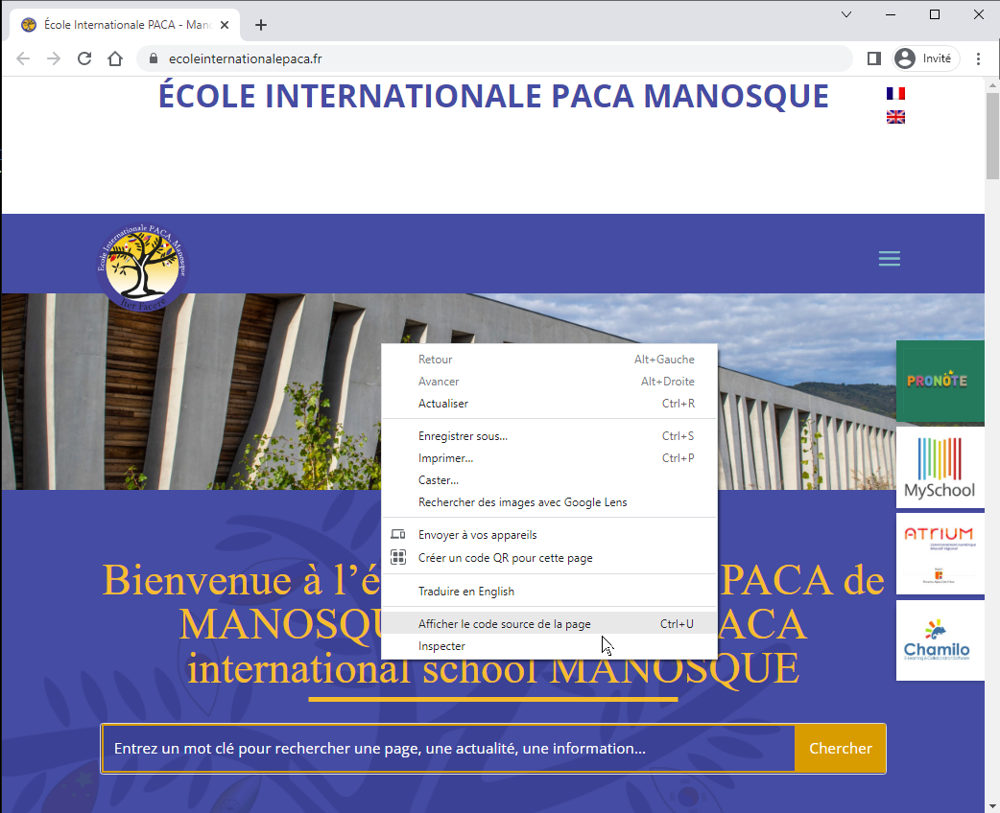
On peut facilement observer le code source d’une page web. Ce code décrit le contenu de ce document.
Ouvrir le site Web de l’école dans le navigateur de votre choix. https://ecoleinternationalepaca.fr/ et cliquer-droit sur une zone blanche puis sélectionner le menu « Afficher le code source de la page » (ou CTRL + U).
Le code source de la page s’affiche.
langage HTML (HyperText Markup Language).
C’est un langage de balisage : il permet d’insérer dans le document des balises qui définissent ce que signifient les différentes parties du texte, et de créer des liens.
Le principe consiste à encadrer un texte par deux balises complémentaires :
- avant le texte : <balise>
- après le texte : </balise>
Quelles sont les balises qui s’affichent dans les trois premières lignes de cette page ?
Le langage HTML n’est pas compilé : il est interprété par le navigateur web. On peut donc aussi le modifier.
Revenir sur la page du site Web de l’école et cliquer-droit sur le titre puis sélectionner le menu « Inspect ».
La partie du code source qui affiche ce titre apparaît. Quelle est l’instruction HTML qui affiche le titre ?
Modifier le texte dans le code source de la page pour changer le titre en « EIPACA » (ou un autre nom de votre choix pour l’école) et appuyer sur Entrée.
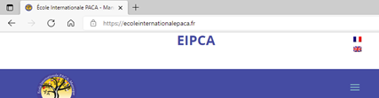
Ouvrir un site Web d’information de votre choix et modifier le texte pour préparer votre prochain canular du 1er avril.
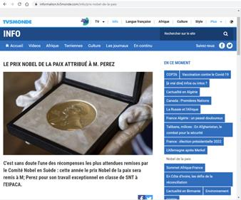